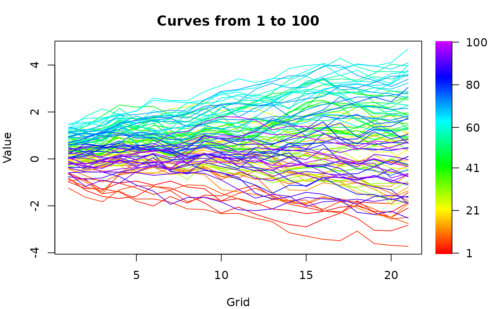
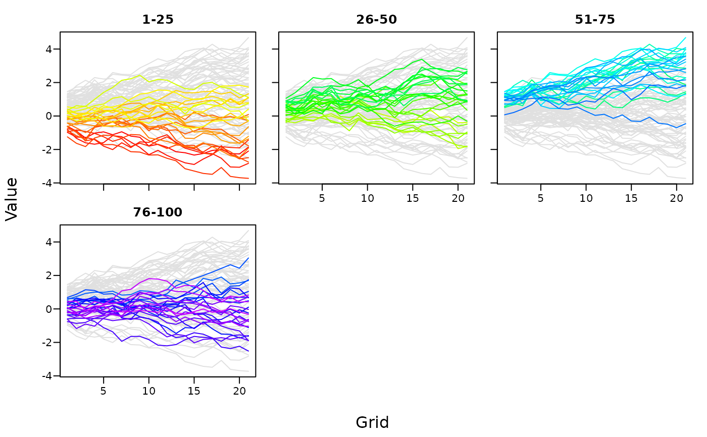

Rainbow plots of curves
plot_curves.RdDraws the curves coloured by time, from red (earliest) to violet (latest).
type = "rainbow" draws all curves in one panel with a colour bar, and
type = "periods" draws one panel per period with the other curves in grey.
Usage
plot_curves(
x,
type = c("rainbow", "periods"),
periods = 5,
argvals = NULL,
xlab = "Grid",
ylab = "Value",
main = NULL,
...
)Arguments
- x
A matrix of curves (grid points by time) or an
ftsobject.- type
"rainbow"or"periods".- periods
Number of periods of equal length, or the first time point of each period, such as
c(1901, 1921, 1941, 1961, 1981).- argvals
Grid values. Defaults to the row names of
xif numeric.- xlab, ylab, main
Axis labels and title.
- ...
Other arguments passed to
graphics::matplot().
Examples
x = sim_farfima(n = 100, d = 0.3, p = 1, q = 0, no_grid = 21, seed = 1)
plot_curves(x)

plot_curves(x, type = "periods", periods = 4)
